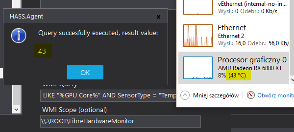

Sensors¶
Overview¶
This page lists the available HASS.Agent sensors, what each one reports, and any important caveats for setup or interpretation.
List of Sensors¶
| Name | Description |
|---|---|
| Active Window | Current active window title. |
| Active Desktop | Current virtual desktop ID. |
| Accent Color | Windows accent colors and related attributes. |
| Audio | Audio activity, default device, and session details. |
| Battery | Charge state, charge level, and runtime estimates. |
| Bluetooth Devices | Bluetooth device count and connection states. |
| Bluetooth LE Devices | Recently seen Bluetooth LE devices and states. |
| CPU Load | Current CPU load percentage. |
| Current Clock Speed | Current CPU clock speed. |
| Current Volume | Current default device volume percentage. |
| Display | Display count plus per-display details. |
| Dummy | Random test value for validation. |
| Geo Location | Current latitude, longitude, and altitude. |
| GPU Load | Current GPU load percentage. |
| GPU Temperature | Legacy sensor that always returns 0. |
| Internal Device Sensor | Data from supported internal device sensors. |
| Last Active | Last recorded user input time. |
| Last Boot | Last system boot time. |
| Last System State Change | Most recent system or session state change. |
| Logged User | Current active logged-in user. |
| Logged Users | All logged-in users as JSON. |
| Memory Usage | Used memory percentage. |
| Microphone Active | Whether the microphone is in use. |
| Microphone Process | Processes currently using the microphone. |
| Monitor Power State | Last monitor power state change. |
| Named Window | Whether a named window is open. |
| Named Active Window | Whether the focused window matches a configured string. |
| Network | Selected network adapter details and statistics. |
| Performance Counter | Value of a selected Windows performance counter. |
| PowerShell | Output of a PowerShell command or script. |
| Printers | Installed printers and queue details. |
| Process Active | Number of running instances of a process. |
| Screenshot | Screenshot camera entity for a selected display. |
| Service State | State of a configured Windows service. |
| Session State | Current lock state of the user session. |
| Storage | Disk labels, sizes, and usage details. |
| User Notification State | Current Windows notification availability state. |
| Webcam Active | Whether the webcam is in use. |
| Webcam Process | Process currently using the webcam. |
| Window State | Current window state of a process. |
| Windows Updates | Pending Windows update counts and details. |
| WMI Query | Result of a custom WMI query. |
Sensor Notes¶
Naming¶
The Name field becomes the entity ID in Home Assistant, so it should avoid spaces and remain stable enough for automations and dashboards.
Friendly Name¶
You can also set a friendly name for the Home Assistant UI. This does not change the entity ID.
Update Interval¶
The update interval controls how often a sensor refreshes. In most cases the recommended default is a good starting point.
Availability Check¶
The availability check controls whether Home Assistant should consider the device online before using the reported state.
All Sensors¶
Active Window¶
Provides the title of the current active window.
Active Desktop¶
Provides the ID of the currently active virtual desktop.
Accent Color¶
Provides #RRGGBB color values for system accent colors.
The main accent color is the sensor value. Additional accent colors are exposed as attributes.
Audio¶
Provides information about several aspects of your device audio:
- current peak volume level, which can be used as a simple "is something playing" value,
- default audio device name, state, and volume,
- a summary of audio sessions including application name, muted state, volume, and current peak volume.
Battery¶
Provides the current charging status, estimated minutes on a full charge, remaining charge percentage, remaining charge in minutes, and the power line status.
Bluetooth Devices¶
Provides a sensor with the number of detected Bluetooth devices.
The devices and their connection state are added as attributes.
Bluetooth LE Devices¶
Provides a sensor with the number of detected Bluetooth LE devices.
The devices and their connection state are added as attributes.
This sensor only shows devices seen since the last report. Each time the sensor publishes, the list is cleared.
CPU Load¶
Provides the current load of the first CPU as a percentage.
Current Clock Speed¶
Provides the current clock speed of the first CPU.
Current Volume¶
Provides the current volume level as a percentage.
This currently uses the volume of your default audio device.
Display¶
Provides the number of displays, the name of the primary display, and per-display details such as name, resolution, and bits per pixel.
Dummy¶
Dummy sensor for testing purposes. It sends a random integer value between 0 and 100.
Geo Location¶
Returns your current latitude, longitude, and altitude as a comma-separated value.
Make sure Windows location services are enabled.
Depending on your Windows version, this can be found in the new Control Panel under Privacy and security -> Location.
GPU Load¶
Provides the current load of the first GPU as a percentage.
GPU Temperature¶
The built-in GPU Temperature sensor is kept only for backward compatibility and always returns 0.
Due to security concerns around the old Libre Hardware Monitor integration, GPU temperature is no longer available through the built-in sensor.
Alternative: WMI Query with LibreHardwareMonitor¶
To monitor GPU temperature, use a WMI Query sensor with LibreHardwareMonitor running in the background.
Note
To continue you must install LibreHardwareMonitor.
Configuration¶
WMI Scope: \\.\ROOT\LibreHardwareMonitor
WMI Query: SELECT value FROM Sensor WHERE Name LIKE "%GPU Core%" AND SensorType = "Temperature"
Note
The built-in GPU Temperature sensor in HASS.Agent is no longer functional. The underlying library was removed due to security concerns, so it has been set to always return 0 for backward compatibility. Use the WMI Query sensor shown above to restore this functionality.
If you would like to know more about the issue, check out the write-up by @DarkAutumn, available here.
Example¶

Internal Device Sensor¶
Provides data from the internal device sensor.
Availability depends on the device. In some cases no internal sensors will be available.
Last Active¶
Provides a datetime value containing the last moment the user provided input.
Optionally, the sensor can update with the current date when the system wakes from sleep or hibernation in a configured time window and no user activity was performed.
Last Boot¶
Provides a datetime value containing the last moment the system booted or rebooted.
Important: Windows Fast Boot can throw this value off because it behaves like a form of hibernation. You can disable it through Power Options -> Choose what the power buttons do -> Turn on fast start-up. On modern machines with SSDs this usually has little impact, but disabling it gives you a cleaner reboot state.
Last System State Change¶
Provides the last system state change:
ApplicationStartedLogoffSystemShutdownResumeSuspendConsoleConnectConsoleDisconnectRemoteConnectRemoteDisconnectSessionLockSessionLogoffSessionLogonSessionRemoteControlSessionUnlock
Logged User¶
Returns the name of the currently logged user.
This only shows active users and falls back to Empty if there are none. If there are multiple active users, the first one is used.
Logged Users¶
Returns a JSON-formatted list of currently logged users.
This also contains users that are not active. If you only want the current active user, use the Logged User sensor instead.
Memory Usage¶
Provides the amount of used memory as a percentage.
Microphone Active¶
Provides a boolean value based on whether the microphone is currently being used.
If used in the satellite service, it will not detect user-space applications.
Microphone Process¶
Provides the number of processes currently using the microphone. The process names are also exposed in the sensor attributes.
If used in the satellite service, it will not detect user-space applications.
Monitor Power State¶
Provides the last monitor power state change:
DimmedPowerOffPowerOnUnknown
Named Window¶
Provides an ON or OFF value based on whether the configured window is currently open. The window does not need to be active.
Named Active Window¶
Provides an ON or OFF value based on whether the focused window name contains the configured string.
Network¶
Provides card info, configuration, transfer and packet statistics, and addresses such as IP, MAC, DHCP, and DNS for the selected network card or cards.
This is a multi-value sensor.
Performance Counter¶
Provides the value of a Windows performance counter.
For example, the built-in CPU Load sensor uses these values:
You can explore available counters through Windows perfmon.exe.
PowerShell¶
Returns the result of the provided PowerShell command or script.
Keep in mind that Home Assistant accepts payloads up to 255 characters.
The result is converted to text.
Printers¶
Provides information about all installed printers and their queues.
Process Active¶
Provides the number of active instances of the configured process.
Do not include the file extension. For example, notepad.exe should be entered as notepad.
Screenshot¶
Provides a screenshot sensor in the form of a camera entity.
The screen number depends on system configuration and starts at 0.
Service State¶
Returns the state of the provided service:
NotFoundStoppedStartPendingStopPendingRunningContinuePendingPausePendingPaused
Make sure to provide the service name, not the display name.
Session State¶
Provides the current session state:
LockedUnlockedUnknown
Use Last System State Change if you want to monitor session state transitions.
Storage¶
Provides the labels, total size in MB, available space in MB, used space in MB, and file system of all present non-removable disks.
User Notification State¶
Provides the current user notification state:
NotPresentBusyRunningDirect3dFullScreenPresentationModeAcceptsNotificationsQuietTimeRunningWindowsStoreApp
This can be used to decide whether notifications or TTS messages should be sent.
Webcam Active¶
Provides a boolean value based on whether the webcam is currently being used.
If used in the satellite service, it will not detect user-space applications.
Webcam Process¶
Provides the name of the process currently using the webcam.
If used in the satellite service, it will not detect user-space applications.
Window State¶
Provides the current state of the process window:
HiddenMaximizedMinimizedNormalUnknown
Windows Updates¶
Provides:
- a sensor with the number of pending driver updates,
- a sensor with the number of pending software updates,
- a sensor containing pending driver update details such as title, KB article IDs, hidden state, type, and categories,
- a sensor containing the same detail set for pending software updates.
This is a costly request, so the recommended interval is 900 seconds or 15 minutes. It is capped at 10 minutes internally, so if you provide a lower value you will receive the last known list.
WMI Query¶
Provides the result of a custom WMI query.